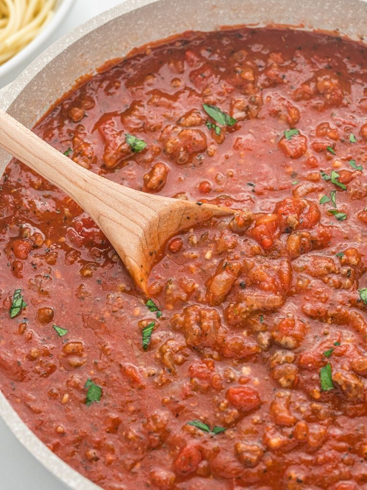

Mom's Meat Sauce

Description
Memories of my childhood include waking up on the weekends to smelling the sweet, delicious, scent of my Mother's meat sauce. Growing up in an Italian family, we had pasta at least once a week. When I moved out and lived on my own, I finally learned how to make this iconic and memoriable reicpe. Enjoy!
Ingredients
- Meat Sauce pack (beef, sausage, pork)
- Two 28oz cans of crushed tomatoes
- Four cloves of garlic
- One 14.5oz can of diced tomatoes
- 1 TBSP of pesto
- Olive Oil
- Italian seasoning
- Salt and pepper, to taste
Steps
- In a large pot, heat the olive oil and garlic until fragnant
- Add in the meat pack, browning all sides, about 3-5 minutes
- Once the meat is browned, add in the cans of crushed and diced tomatoes
- Mix in the pesto, italian seasoning, salt and pepper
- Turn up heat to high and bring sauce to a boil
- Once boiled, bring the heat down to low
- Cover and let sauce simmer for 4-6 hours